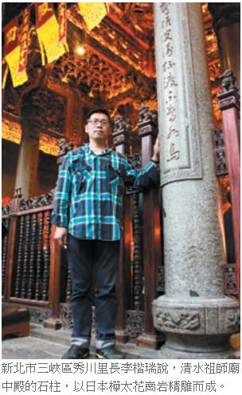

二戰燒毀建築 成祖師廟石柱
鄧桂芬｜聯合報／文化∣2012年12月1日
三峽清水祖師廟中殿的八根石柱，是已故的國寶級藝術家李梅樹，在六十五年前以日治時期遭盟軍炸毀，產自庫頁島且已不開採的台灣神宮、台灣神社鳥居和燈柱打造而成，吸引不少日本學者專程來研究。
李梅樹的長子李景暘表示，樺太花崗岩因不能開採，價值不斐；台灣神宮是日本在台地位最高的信仰中心，就像日本貴族的明治神宮一樣，「建材當然也要用最好的。」
他說，日前神奈川大學專門研究地質和歷史的退休教授金子展亦，為記錄台灣的日本神祇，在網路上看到台灣神宮鳥居石柱被李梅樹買下，特地來祖師廟一探究竟。
當地秀川里長李楷瑞表示，祖師廟六十五年前重建時，李梅樹大師原要用福建的青斗石做石柱，因當年「漢賊不兩立」作罷，一度打算改用台北觀音山石。
剛好政府拍賣遭美軍空襲燒毀的台灣神社（今圓山飯店）及台灣神宮（今忠烈祠）的鳥居和燈柱，李梅樹獲悉後，以當時的舊台幣四千萬元（折算新台幣約一千元）低價買下。
祖師廟總務組長劉金達表示，當時李梅樹只想到修廟「需要」石材，沒想到低價買回珍貴的日本進口樺太花崗岩，經師傅精雕細琢，成為中殿主要的八根石柱，為這座藝術殿堂增添美感與價值。
祖師廟董事長林東西說，一九四五年日人想在台北建置台灣最大的神社及神宮，遠從日本海運樺太花崗岩做鳥居和燈柱，戰敗退離台灣，讓這批珍貴的石材留在台灣。
劉金達說，當年買回來的樺太花崗岩只用掉一半，目前存放在倉庫內的部分石材，上方還刻有「昭和三年」等字樣；廟方決定妥善保留，等「三峽清水祖師廟歷史文物館」落成時開放觀賞。